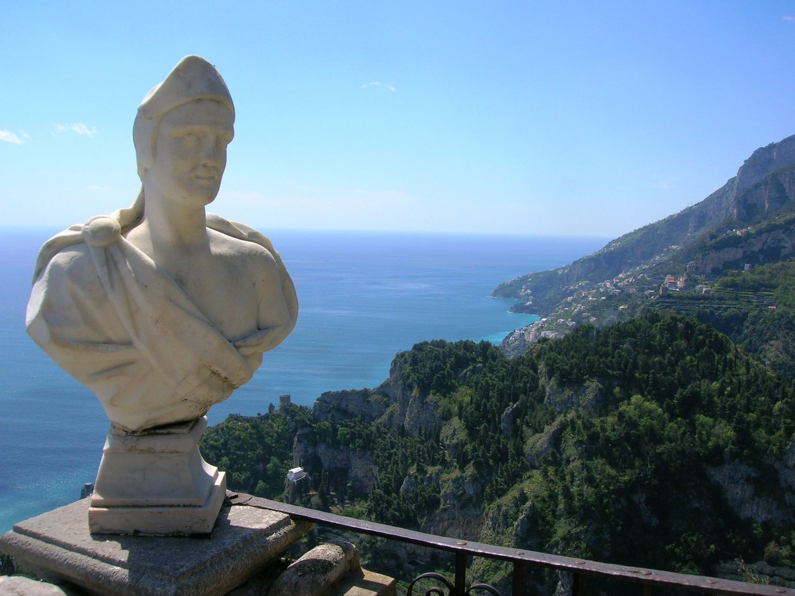
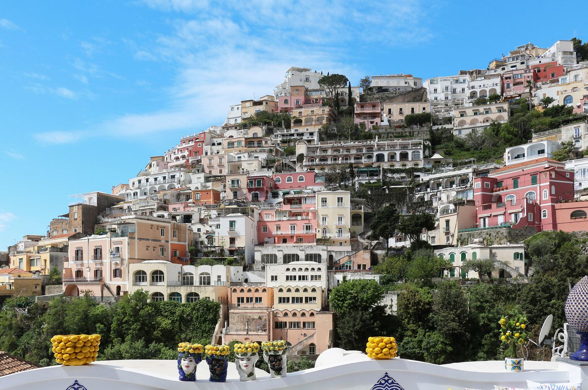
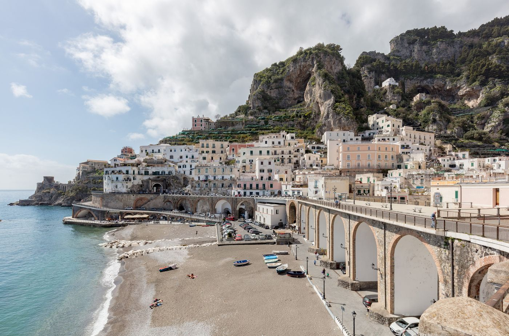
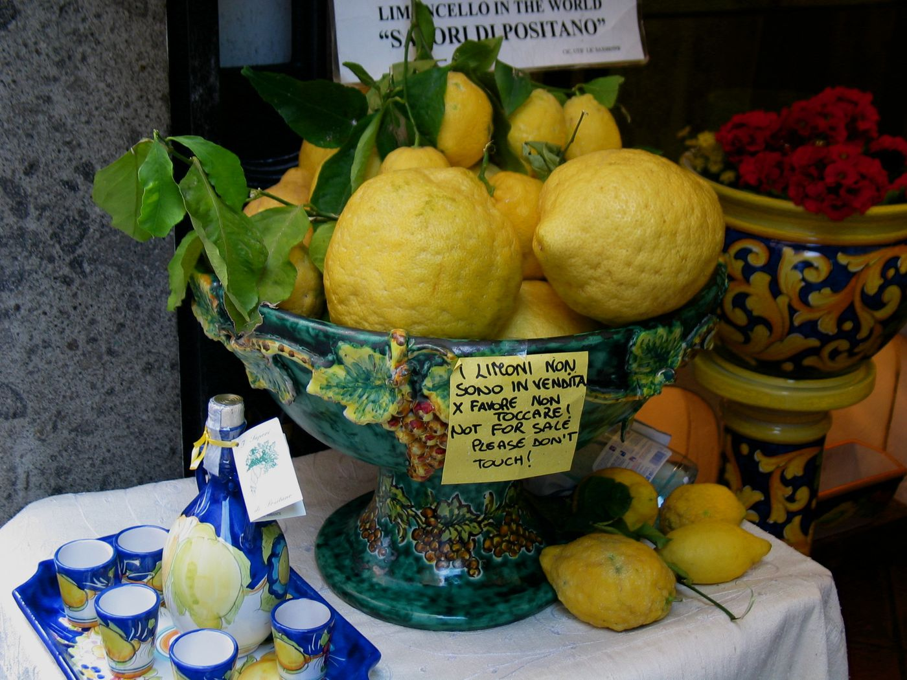

01
Italy
The Amalfi Coast
Lemon groves, cliff-hung villages and the most beautiful bus ride in Europe.
Positano tumbles down to the water like a stack of sugared almonds, and from Ravello, a thousand feet up, the whole gulf looks like a painting. Hire a boat for a day, eat lunch with your feet in the sand, and save one sunset for the Terrace of Infinity at Villa Cimbrone.




Culture
- Villa Cimbrone's gardens and its marble-bust terrace above the sea
- A private boat to the grottoes and swimming coves
- The Path of the Gods hike, with an early start and a ferry home
- Limoncello tasting in the Amalfi paper-making valley
Where to eat
- Da AdolfoLaurito beach, PositanoReached only by its own little boat; grilled fish and white wine with peaches. Lunch only.
- La SpondaLe Sirenuse, PositanoLit by some 400 candles every night. Book well ahead.